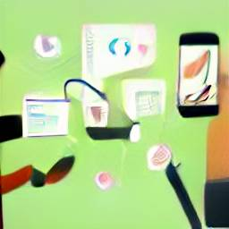

Blog
👨‍💻 Razorpay Internship
InternshipDesignIn the summers of 2019, I interned at Razorpay as a Full-Stack Designer. This blog documents how I made it there and my experience thereafter.
30th August 2019
👻 Lost and Found
MobileDesignLost and Found was my first design project that I had worked on from start to finish. In this blog post I go about sharing my process regarding the same.
19th January 2018👕 T-Shirts and Data Viz
DataDesignDeveloped a name-based visualization for my T-Shirt design project. I worked over several such visualizations and this article aims to document that.
18th February 2020😷 Modelling Epidemics
MathEpidemiologyDue to the ongoing COVID-19 Pandemic, I naturally grew curious to better understand pandemics. Here's my attempt at explaining you this topic.
25th April 2020- 
🧠Product Designers can't disrupt
OpinionDesignTechnologyHere is my personal take on why I think Digital Product Designer are limited by their skillset when trying to build new technology
12th April 2022